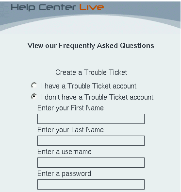
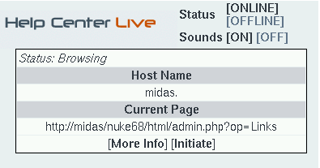
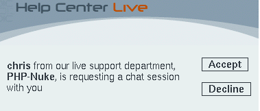
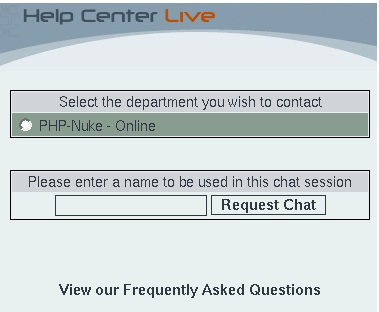

20.5. How to use Javascript in PHP-Nuke blocks
Javascript can be used with PHP-Nuke without problems, as long as you remember that they operate in different environments (see Frames, JavaScript, and PHP Overview):
PHP-Nuke, like PHP, is server side. Therefore, if you want to pass data from a form to PHP-Nuke, you have to submit it and load the page again. There is no getting around it.
Javascript is client side (run in the browser), and can help you with dynamic functionality. You can easily use JavaScript and PHP-Nuke together. However, just like PHP, PHP-Nuke knows nothing about Javascript. PHP-Nuke will just echo the Javascript code to the HTML page, just as it would echo the value of a string variable.
Thus, from the point of view of PHP and PHP-Nuke, there is no difference between
<?php echo 'Welcome to PHP-Nuke'; ?> |
and
<?php
echo '<script type="text/javascript">
<!--
if ( 1 ) {
window.open(\'modules.php?name=News\', \'_WELCOME\',
\'HEIGHT=450, resizable=yes, WIDTH=600\');
}
//-->
</script>';
?> |
They both echo strings, of which the first one is simply displayed in the client's browser as a welcome message, while the second one is interpreted by the client's browser and leads to the browser sending a request for the News module, which in turn sends the usual home page of a PHP-Nuke site to be displayed on the client.
With this in mind, Javascript does not demand any special treatment when used in PHP-Nuke blocks. Just append the Javascript code to the $content variable of the block and you are done. Of course, you have to escape double quotes - and it is a good idea to add a newline (\n) to the end of each Javascript line (see Javascript and BLOCKs).
If you use sed, the following sequence of sed commands, applied to a Javascript file, will produce the right PHP code to include in the PHP-Nuke block:
1,$s/"/\\"/g |

- Escape all double quotes.

- Add the string '$content .= "' at the start of every line.

- Add the string '";' at the end of every line.

- Add a newline \n at the end of each JS line.
You can put them in a file, sedscr, and tell sed to read sedscr for commands, while editing the original Javascript file (javascript):
sed -f sedscr javascript > block-Javascript.php |
Of course, you can use vi (Section 11.1) too - see Section 21.9.1 for a similar example - or just do the substitutions manually. The examples in this section demonstrate what you have to do (see also Javascript in a PHP-Nuke block):
How to create a Hello World block (Section 20.5.1),
How to create a fade block (Section 20.5.2),
How to create a Help Center Live block (Section 20.5.3).
20.5.1. How to create a Hello World block
We will start with a very simple block, one that just displays “Hello World”. Once you get the idea, you will be able to construct any Javascript block for PHP-Nuke - they all follow the same rules.
We will keep the Javascript code in a separate file, say hello-world.php, in the PHP-Nuke includes directory. The includes directory is a natural place for it, because it also contains the javascript.php file (see Section 21.9.1). You can use the javascript.php file to store your own Javascript functions (as shown in Javascript in a PHP-Nuke block), but for this simple example, hello-world.php is more than enough. It contains only a few lines:
<?php
echo '
document.write("Hello World!");
';
?> |
Now, create a block, block-Hello_World.php, in the blocks folder that contains:
<?php
if (eregi("block-Hello_World.php",$_SERVER[PHP_SELF])) {
Header("Location: index.php");
die();
}
$content.="<center><script language=\"JavaScript\"
src=\"includes/hello-world.php\"></script></center></b>";
?> |
As you can see, block-Hello_World.php loads the hello-world.php from the includes folder as a Javascript code. hello-world.php, in turn, is executed and echoes the document.write command in the HTML file that is sent to the client's browser. When a the browser receives it (and has Javascript enabled), executes the code writing the "Hello World" message in the place it was called - in the Hello World block.
Using this technique, you can create blocks that are very rich in functionality - just echo their code with a PHP file and call that file as Javascript code from the block. See Section 20.5.3 for a non-trivial example.
20.5.2. How to create a fade block
So you have seen this cool fade effect on a site and you decided to incorporate it in a PHP-Nuke block on your site too? I mean that effect that makes the image fade gradually away, when you pass over it with the mouse cursor - and comes again gradually back the next time you revisit it with the mouse cursor. Before you plunge into this, consider that it is just an effect - and one that will work only with Internet Explorer. If you still feel you must have it, here is the PHP-Nuke block that demonstrates this fade effect:
<?php
if (eregi("block-Fade.php",$PHP_SELF)) {
Header("Location: index.php");
die();
}
$content .= "<script> \n";
$content .= "\n";
$content .= "/* \n";
$content .= "Gradual-Highlight Image Script II- \n";
$content .= "By J. Mark Birenbaum (birenbau@ugrad.cs.ualberta.ca) \n";
$content .= "Permission granted to Dynamicdrive.com to feature script in archive \n";
$content .= "For full source to script, visit http://dynamicdrive.com \n";
$content .= "*/ \n";
$content .= "\n";
$content .= "nereidFadeObjects = new Object(); \n";
$content .= "nereidFadeTimers = new Object(); \n";
$content .= "\n";
$content .= "/* object - image to be faded (actual object, not name); \n";
$content .= "* destop - destination transparency level (ie 80, for mostly solid) \n";
$content .= "* rate - time in milliseconds between trasparency changes (best under 100) \n";
$content .= "* delta - amount of change each time (ie 5, for 5% change in transparency) \n";
$content .= "*/ \n";
$content .= "\n";
$content .= "function nereidFade(object, destOp, rate, delta){ \n";
$content .= "if (!document.all) \n";
$content .= "return \n";
$content .= "if (object != \"[object]\"){ //do this so I can take a string too \n";
$content .= "setTimeout(\"nereidFade(\"+object+\",\"+destOp+\",\"+rate+\",\"+delta+\")\",0); \n";
$content .= "return; \n";
$content .= "} \n";
$content .= "\n";
$content .= "clearTimeout(nereidFadeTimers[object.sourceIndex]); \n";
$content .= "\n";
$content .= "diff = destOp-object.filters.alpha.opacity; \n";
$content .= "direction = 1; \n";
$content .= "if (object.filters.alpha.opacity > destOp){ \n";
$content .= "direction = -1; \n";
$content .= "} \n";
$content .= "delta=Math.min(direction*diff,delta); \n";
$content .= "object.filters.alpha.opacity+=direction*delta; \n";
$content .= "\n";
$content .= "if (object.filters.alpha.opacity != destOp){ \n";
$content .= "nereidFadeObjects[object.sourceIndex]=object; \n";
$content .= "nereidFadeTimers[object.sourceIndex]=setTimeout
(\"nereidFade(nereidFadeObjects[\"+object.sourceIndex+\"],\"+destOp+\",
\"+rate+\",\"+delta+\")\",rate);\n";
$content .= "\n";
$content .= "} \n";
$content .= "} \n";
$content .= "\n";
$content .= "</script> \n";
$content .= "<center><img src=\"images/xxx.png\"
style=\"filter:alpha(opacity=10)\" onmouseover=\"nereidFade(this,100,30,5)\"
onmouseout=\"nereidFade(this,10,50,5)\"></center>";
?> |
This is an adaptation of the Dynamic Highlight II Script, by J Mark Birenbaum, that just appends the Javascript code in the $content variable of a PHP-Nuke block. You can adjust some parameters, such as the transparency level, the time between trasparency changes and amount of change each time - see the comments in the script's code. You should of course at least adapt the image source file (images/xxx.png in the code) to your situation.
20.5.3. How to create a Help Center Live block
We will now move on to consider a block that can integrate the whole functionality of a Help Center: the Help Center Live block for PHP-Nuke. Help Center Live is an Open Source Application that is distributed under the GNU Genreal Public License (GPL). It helps you build a real support department for your business. With Help Center Live you can:
Create online accounts for your departments.
Create online accounts for your support operators and assign them to departments.
Create FAQs for your customers.
If an operator is online, he can see which hosts currently view the company's page and can initiate chat sessions with those hosts.
If someone from a support department is online (has logged in Help Center Live), the visitors browsing the company's page can see this and initiate a chat session with that support person. Thus, a customer can directly contact support personnel and seek a solution to his problem.
At the end of the chat session, a transcript of the session can be sent to the participants, at e-mail addresses of their choice.
If nobody from the support department(s) is online, the visitor still has the possibility to issue a trouble ticket.
Trouble tickets are tracked through a database and there exists a sophisticated backend for dealing with them.
How can you incorporate all this functionality into your PHP-Nuke site?
At first, you must install Help Center Live on our site, or, if we only want to test it, local system. For this, download the package from Help Center Live and extract its contents into some folder of your web root, say under /helpcenter. Then you must edit the config.php file in the inc directory of that folder with the decent text editor (Chapter 11) of your choice. There are various parameters you can set up there, but the most important are the $URL_* ones
$URL_site = "midas"; $URL_dir = "/helpcenter/"; $URL_maindir = "http://midas/helpcenter"; $URL_secure = 0; |
as well as the DB_* ones:
$DB_host = "localhost"; $DB_user = "db user here"; $DB_pass = "db password here"; $DB_name = "db name here"; $DB_prefix = "prefix here"; $DB_pconnect = 0; |
The $DB_host, $DB_user, $DB_pass and $DB_name variables could be the same as the $dbhost, $dbuser, $dbpass and $dbname variables in config.php respectively (see Section 3.7), although not necessarily so.
 | Terminate the DB_prefix with an underscore! |
|---|---|
If you use a $DB_prefix, make sure it ends in an underscore (_), otherwise it will be directly concatenated with the table names, rendering them difficult to tell apart. |
The $URL_site, $URL_dir and $URL_secure variables are only used in calls to the PHP setcookie() function:
setcookie("Help Center LiveUser", $INFO_username, $time, $URL_dir, $URL_site, $URL_secure); |
Calls to setcookie() like the above are scattered throughout the code - Table 20-1 lists all files and lines containing such calls. If you experience the infamous login loop problem, it is probably because the setcookie() function was not able to set the cookie on the client. 
Table 20-1. Help Center Live: setcookie() calls
File | setcookie() call |
cp/logout.php | setcookie("HelpCenterLiveOperator", $LOGIN_username, $time, $URL_dir, $URL_site, $URL_secure); |
cp/logout.php | setcookie("HelpCenterLivePassword", $LOGIN_password, $time, $URL_dir, $URL_site, $URL_secure); |
cp/login.php | setcookie("HelpCenterLiveOperator", $LOGIN_username, $time, $URL_dir, $URL_site, $URL_secure); |
cp/login.php | setcookie("HelpCenterLivePassword", $LOGIN_password, $time, $URL_dir, $URL_site, $URL_secure); |
lh/live_request.php | setcookie("HelpCenterLiveGuest", $REQUEST_name, $time, $URL_dir, $URL_site, $URL_secure); |
lh/live_request.php | setcookie("HelpCenterLiveGuest", $REQUEST_delname, $deltime, $URL_dir, $URL_site, $URL_secure); |
lh/live_request.php | setcookie("HelpCenterLiveGuest", $REQUEST_name, $time, $URL_dir, $URL_site, $URL_secure); |
lh/live_mail.php | setcookie("HelpCenterLiveUser", $LOGIN_username, $time, $URL_dir, $URL_site, $URL_secure); |
lh/live_mail.php | setcookie("HelpCenterLivePass", $LOGIN_password, $time, $URL_dir, $URL_site, $URL_secure); |
tt/user_register.php | setcookie("Help Center LiveUser", $REGISTER_username, $time, $URL_dir, $URL_site, $URL_secure); |
tt/user_register.php | setcookie("Help Center LivePass", $REGISTER_password, $time, $URL_dir, $URL_site, $URL_secure); |
tt/user_login.php | setcookie("HelpCenterLiveUser", $LOGIN_username, $time, $URL_dir, $URL_site, $URL_secure); |
tt/user_login.php | setcookie("HelpCenterLivePass", $LOGIN_password, $time, $URL_dir, $URL_site, $URL_secure); |
tt/user_logout.php | setcookie("HelpCenterLiveUser", $LOGIN_username, $time, $URL_dir, $URL_site, $URL_secure); |
tt/user_logout.php | setcookie("HelpCenterLivePass", $LOGIN_password, $time, $URL_dir, $URL_site, $URL_secure); |
tt/user_info.php | setcookie("Help Center LiveUser", $INFO_username, $time, $URL_dir, $URL_site, $URL_secure); |
tt/user_info.php | setcookie("Help Center LivePass", $INFO_password, $time, $URL_dir, $URL_site, $URL_secure); |
This happens if, for example, you are installing Help Center Live locally, and the host name for $URL_site is taken from a hosts file and not from DNS. One way to get around this is to change all calls to setcookie() listed in Table 20-1 and take out the last two parameters, $URL_site and $URL_secure, as in the following example:
setcookie("Help Center LiveUser", $INFO_username, $time, $URL_dir); |
After the installation of Help Center Live, you can point your browser to the address you entered for $URL_maindir (http://midas/helpcenter, in our example) and, after a successful login, you will be presented with the main screen (Figure 20-5).
Now, create a PHP-Nuke block that uses the method of our Hello World example in Section 20.5.1 to incorporate Help Center Live's functionality:
<?php
if (eregi("block-Online_Support.php",$_SERVER[PHP_SELF])) {
Header("Location: index.php");
die();
}
$content.="<center><script language=\"JavaScript\"
src=\"http://midas/helpcenter/lh/live.php\"></script></center></b>";
?> |
We named the block above "block-Online_Support", but of course you can use whatever title you like, as long as it is passed as the "needle" string to the eregi() function of the block. The main code consists of only one line, which inserts a Javascript code, whose source file is the lh/live.php PHP script of Help Center Live. We did the same in Section 20.5.1 to output a Hello World message, but now, this simple line opens a whole world of possibilities for our PHP-Nuke page! Let's see what happens when we activate the Online Support block we just created:
As long as all Help Center operators are logged off, the block will display a “Live Support is Offline” message, as in Figure 20-6.
Figure 20-6. Help Center Live block: Live Support is Offline.
Help Center Live block: Live Support is Offline.
In this case, a click on the arrow in the block's inside will open a window that gives the customer the possibility to enter a trouble ticket (Figure 20-7). The window also offers a link to the FAQ and offers the choice to refer to an existing trouble ticket or create a new one.
Figure 20-7. Help Center Live block: Creating a trouble ticket.

Help Center Live block: Creating a trouble ticket.
On the other side, if some support operator is online and has launched the request monitor (which opens a window for the operator, displaying the live connections he is currently maintaining), the block will display it with a “Live Support is Online!” message (Figure 20-8).
Figure 20-8. Help Center Live block: Live Support is Online.
Help Center Live block: Live Support is Online.
The request monitor, on the operator's side, will display all hosts that are currently viewing the PHP-Nuke page with the Online Support block showing the “Live Support is Online!” message (Figure 20-9). In other words, both users and operators are informed of each other's online presence.
Figure 20-9. Help Center Live block: Request monitor for the operator.

Help Center Live block: Request monitor for the operator.
Now - and this adds a tremendous value to that tiny block we just created - each side can initiate an online chat with the other part:
The operator can click on the “Initiate” link and, after selecting the aproppriate department, initiate a chat with the selected user. The user will get pop-up window, notifying him of the operator's wish for a chat (Figure 20-10). The user can then decide whether to accept or decline the chat request.
Figure 20-10. Help Center Live block: User notification of the operator's chat request.

Help Center Live block: User notification of the operator's chat request.
On the user's side, everybody can click on the arrow besides the “Online!” message in the Online Support block. This will initiate a chat request on behalf of the user (Figure 20-11). The operator will get a pop-up window notifying him of the user's request, which he can accept or decline as well.
Figure 20-11. Help Center Live block: User chat request.

Help Center Live block: User chat request.
Either way, initiating from the operator's or user's side, a chat session starts between the two, hopefully leading to the solution of the user's problem. A transcript of the chat can be sent to an e-mail address of the participant's choice for future reference.
This completes our brief review of Help Center Live's features. If you have a look at the code of the Online Support block above and the code of the Hello World block in Section 20.5.1, you will see that they both use the same method to incorporate functionality in a PHP-Nuke block through Javascript. The method is the same, but what a huge difference in functionality! There, a simple “Hello World” output - here, a full-featured Help Center! This demonstrates the broad spectrum of possibilities that a simple line like
$content.="<center><script language=\"JavaScript\" src=\"Some <acronym>PHP</acronym> script\"></script></center></b>"; |
can offer, when used intelligently in a PHP-Nuke block with Javascript.
 | Help Center Live is looking for a sponsor! |
|---|---|
HCL is getting well over a million hits per month and its on a huge increase keeping in mind that Fantastico now has HCL as a featured script for install. Mike, the developer of HCL, offers it under the GPL - however, he is looking for sponsor to help him continue its development for free and cope with the ever-increasing hosting fees and other expenses. Please contact Mike, if you are interested and serious about sponsoring HCL. |